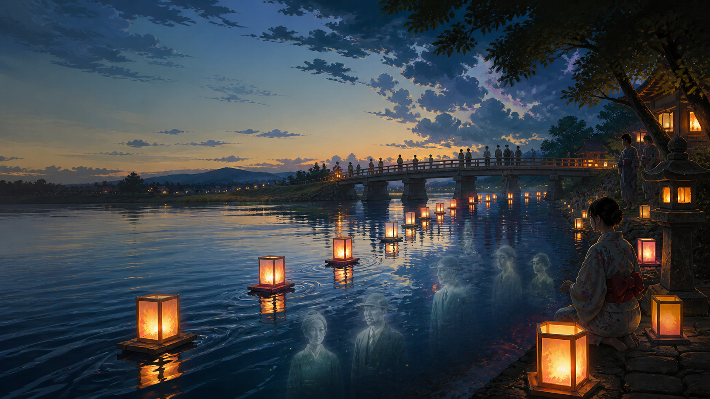

Durante o Obon Yasumi, muita gente no Japão evita entrar no mar, em rios ou em águas profundas. A explicação popular aparece em várias formas: os espíritos dos mortos estariam de passagem pelas águas, poderiam chamar os vivos, puxar quem nada ou tornar o período mais perigoso para brincadeiras de verão.

Não existe uma regra religiosa única dizendo que todo japonês acredita nisso do mesmo jeito. O que existe é uma camada forte de folclore, memória familiar e prudência social: Obon é a época em que os ancestrais retornam, e a água aparece como imagem de travessia, despedida e fronteira entre mundos.
Por que água e espíritos se encontram no Obon
O Obon é ligado à lembrança dos ancestrais. Famílias visitam túmulos, acendem lanternas, fazem oferendas e participam de rituais locais. Em algumas regiões, lanternas são colocadas sobre rios ou no mar no toro nagashi, gesto simbólico de guiar os espíritos de volta.
Quando uma cultura associa os mortos a retorno, travessia e despedida, a água ganha força simbólica. Rio, mar e correnteza deixam de ser apenas natureza: viram passagem. Daí nasce a advertência popular que muitos brasileiros no Japão já ouviram: “não entra na água no Obon”.
A lenda do puxão dos mortos
A versão mais conhecida diz que, durante o Obon, os espíritos passam pelas águas e podem levar alguém junto. Em tom de família, isso pode soar como superstição para assustar criança. Mas, como muitas lendas, ela também funciona como tecnologia social: uma forma simples de impedir gente cansada, distraída ou imprudente de entrar em lugar perigoso.
O detalhe importante é não tratar a crença como estatística. A lenda não prova que “morre muita gente porque espírito puxou”. Ela revela como o Japão tradicional organizou medo, respeito e prevenção em uma frase fácil de lembrar.
Por que o risco real aumenta nessa época
O Obon Yasumi acontece no auge do verão japonês para muitas famílias. Há calor forte, crianças de férias, adultos cansados, viagens para a cidade natal, praias e rios cheios, churrascos, álcool, tufões se aproximando e mudanças rápidas de correnteza. Tudo isso cria um cenário real de risco.
A Guarda Costeira japonesa orienta cuidado com ondas, correntezas, mudanças de clima, cansaço, álcool e supervisão de crianças durante banhos de mar. A mensagem moderna é prática; a mensagem antiga é simbólica. As duas apontam para o mesmo lugar: água bonita também mata quando a pessoa subestima.
Rio é diferente de piscina
Para brasileiros no Japão, o perigo mais traiçoeiro costuma ser rio de montanha. A água parece rasa, limpa e calma, mas pode ter buracos, pedras escorregadias, correnteza lateral e subida repentina por chuva em outra parte da montanha. Criança brincando perto da margem precisa de adulto olhando de verdade, não só “por perto”.
No mar, atenção a corrente de retorno, áreas sem salva-vidas, placas locais e mudança de tempo. Depois de tufão ou chuva forte, evitar água não é medo exagerado: é bom senso.
Como ler a lenda sem debochar dela
Uma leitura rasa diz: “japonês acredita que morto puxa gente”. Uma leitura melhor percebe outra coisa: o Obon coloca os vivos diante dos mortos, e a água sempre foi uma fronteira poderosa. A lenda protege porque dá forma narrativa a um risco que, muitas vezes, a pessoa só entende tarde demais.
Em vez de perguntar se a lenda é literalmente verdadeira, talvez a pergunta útil seja: por que tantas famílias repetiram esse aviso por gerações? Porque verão, viagem, água e descuido sempre foram uma combinação perigosa.
O que fazer no Obon Yasumi
Se for ao rio, mar ou lago, confira previsão, alertas locais, presença de salva-vidas e condição da água. Não entre alcoolizado, não deixe criança sozinha, use colete quando fizer sentido e saia imediatamente se o tempo virar. Se moradores locais disserem para não entrar, escute.
A lenda dos espíritos nas águas não precisa ser tratada como pânico. Ela pode ser entendida como uma forma antiga de respeito: pelos mortos, pela natureza e pelos limites do corpo vivo.
Aviso de atualização
Texto revisado em 12 de agosto de 2026. Este artigo aborda crença popular e segurança aquática de forma informativa. Regras, alertas, clima e condições de praias e rios mudam por região; confirme fontes locais antes de entrar na água.
Fontes consultadas
- Japan Travel/JNTO: Japan in August
- Japan Travel/JNTO: local festivals and Bon Odori participation
- Kotobank: 盆行事
- Japan Coast Guard: 海水浴の心得
- MEXT School Safety: prevenção de insolação e acidentes aquáticos